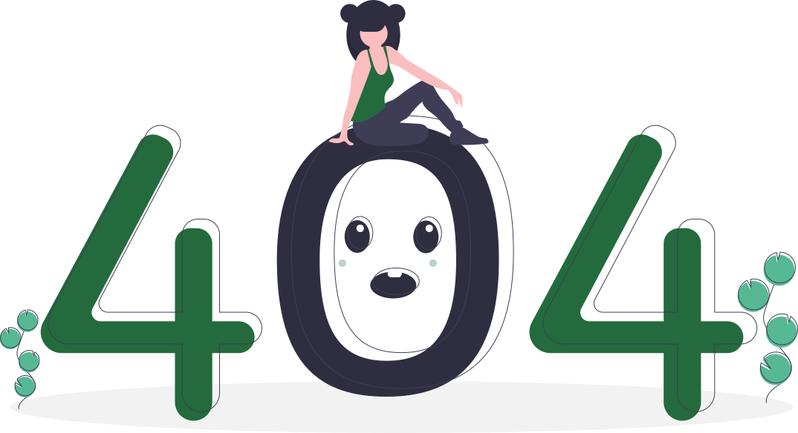

<section align = "center">
  
  <br>
  <br>
  <br>
  <div align="center">
    <a mat-flat-button [routerLink]="'/dashboard'">
      <mat-icon>arrow_back_ios</mat-icon> Home
    </a>
  </div>
</section>
